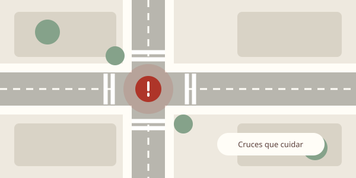
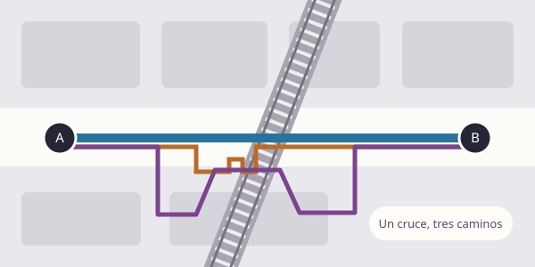
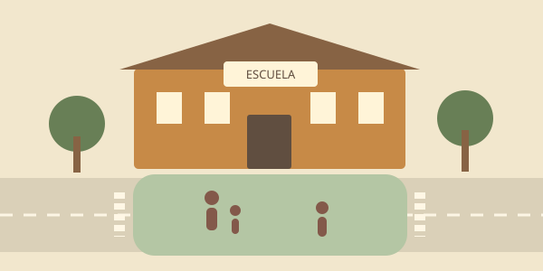
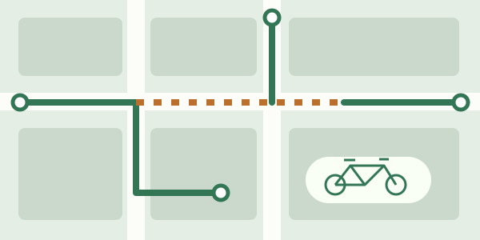

Esquinas más seguras
Identificar dónde priorizar intervenciones para reducir el peligro al cruzar. Explorar las esquinas, sus características y los siniestros registrados.
Entrar al mapa de esquinasLa ciudad, a escala de las personas
Queremos una ciudad donde caminar y pedalear sea más seguro, cómodo y directo. Analizamos sus calles para identificar dónde el diseño urbano nos pone en riesgo o nos obliga a dar vueltas de más, y pensar cómo mejorarlo.
Explorar los análisisDos análisis para explorar y dos líneas para sumar.

Identificar dónde priorizar intervenciones para reducir el peligro al cruzar. Explorar las esquinas, sus características y los siniestros registrados.
Entrar al mapa de esquinas
Comparar recorridos en auto, a pie y sin escaleras. Mostrar cuánto se alarga el camino cuando necesitás una rampa, llevás un cochecito o caminás con una bicicleta.
Comparar los recorridos
Evaluar qué calles podrían cerrarse al tránsito motorizado durante horarios escolares para cuidar la llegada, la salida y el entorno de las escuelas.
Análisis pendiente de integrar

Identificar qué conexiones faltan para formar una red continua y evitar que un recorrido en bicicleta termine en un tramo peligroso.
Análisis pendiente de integrar
Cruzamos datos de la ciudad y OpenStreetMap para comparar lugares y detectar posibles mejoras. Cada análisis explica qué mide, de dónde salen los datos y cuáles son sus límites.
Los resultados orientan preguntas y prioridades: no reemplazan una visita al lugar ni la experiencia de quienes lo usan. Un recorrido sin escaleras, por ejemplo, no garantiza una rampa accesible.
Consultar el procedimiento del piloto de túneles